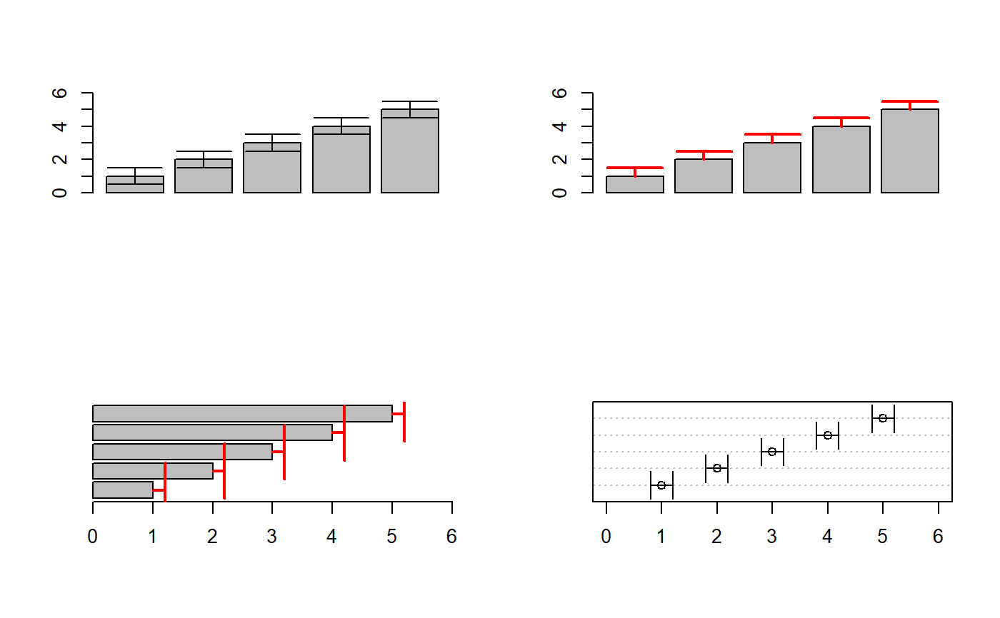

ErrBars.RdAdd error bars to an existing plot.
ErrBars(from, to = NULL, pos = NULL, mid = NULL, horiz = FALSE, col = par("fg"), lty = par("lty"), lwd = par("lwd"), code = 3, length = 0.05, pch = NA, cex.pch = par("cex"), col.pch = par("fg"), bg.pch = par("bg"), ...)
| from | coordinates of points from which to draw (the lower end of the error bars). If |
|---|---|
| to | coordinates of points to which to draw (the upper end of the error bars). |
| pos | numeric, position of the error bars. This will either be the x-coordinate in case of vertical error bars and the y-coordinate in case of horizontal error bars. |
| mid | numeric, position of midpoints. Defaults to the mean of |
| horiz | logical, determining whether horizontal error bars are needed (default is FALSE). |
| col | the line color. |
| lty | the line type. |
| lwd | line width. |
| code | integer code, determining where end lines are to be drawn. |
| length | the length of the end lines. |
| pch | plotting character for the midpoints. The position of the points is given by |
| cex.pch | the character extension for the plotting characters. Default is |
| col.pch | the color of the plotting characters. Default is |
| bg.pch | the background color of the plotting characters (if pch is set to 21:25). Default is |
| ... | the dots are passed to the |
A short wrapper for plotting error bars by means of arrows.
par(mfrow=c(2,2)) b <- barplot(1:5, ylim=c(0,6)) ErrBars(from=1:5-rep(0.5,5), to=1:5+rep(0.5,5), pos=b, length=0.2) # just on one side b <- barplot(1:5, ylim=c(0,6)) ErrBars(from=1:5, to=1:5+rep(0.5,5), pos=b, length=0.2, col="red", code=2, lwd=2) b <- barplot(1:5, xlim=c(0,6), horiz=TRUE) ErrBars(from=1:5, to=1:5+rep(0.2,5), pos=b, horiz=TRUE, length=0.2, col="red", code=2, lwd=2) par(xpd=FALSE) dotchart(1:5, xlim=c(0,6))